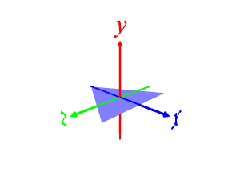
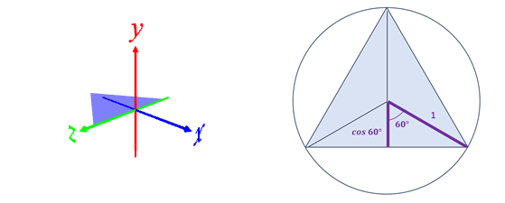
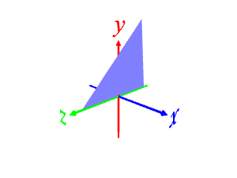
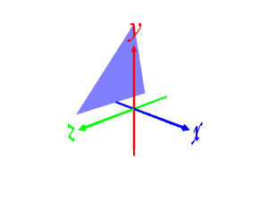
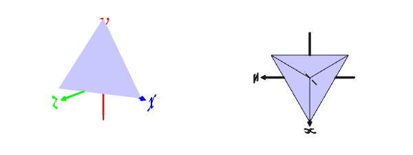
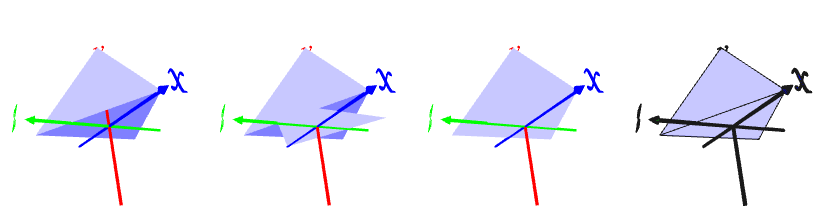
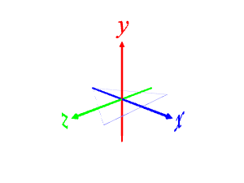
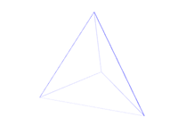

[1] 正三角形を作る
polygon 3 1 # 正三角形, サイズ(外接円半径):1

[2] 一辺が z 軸に乗るように移動する
t -np.cos(np.deg2rad(60)) 0 0 # x軸のマイナス方向にcos 60°移動

[3] z 軸周りに回転して正三角形を起こす。
後で 3 枚の正三角形を並べた時にすき間なくつながるための角度は正四面体の二面角(70.53°)
座標系の向きの都合上, -(180-70.53) を指定する
r 0 0 -(180-70.53) # z 軸周りに 70.53°回転

[4] y 軸周りに回転した時に底面に正三角形ができるように原点から離れる。
t -np.cos(np.deg2rad(60)) 0 0 # x軸のマイナス方向にcos 60°移動

[5] y 軸周りに 120°回転し, 正三角形を3枚にする。
(わかりにくいので上から見たワイヤーフレーム表示を右に置く)
r 0 120 0 3 # y 軸周りに120°回転して 3 枚にする

[6] 底面の三角形を作る。
(この方向からは見えないので下側をのぞく)
polygon 3 1
r 0 180 0 # y 軸周りに 180°回転(x 軸方向に頂点が来るようにする)

[1] で作る三角形を枠だけにするとワイヤーフレーム版の正四面体になる。
polygon 3 1 -0.01 # 正三角形, サイズ(外接円半径):1, 高さ:0.01 (マイナスは天板, 底面不要のための指定)

[2] 以降は上と同じ。([6]で作る正三角形も枠だけにする)
